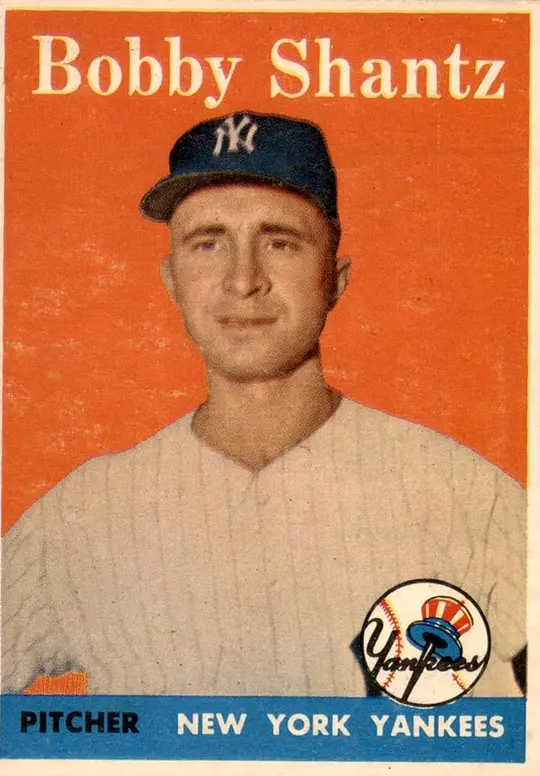

Bobby Shantz "The Little Lefty"
Career Highlights & Facts
(Facts are AI-generated and may require verification)
- Won the Most Valuable Player Award after a 24-win season.
- Earned the inaugural Gold Glove Award presented to a pitcher.
- Struck out three consecutive Hall of Fame hitters in a single All-Star Game appearance.
Would you like to find out more about Bobby Shantz?
Player Biography
Bobby Shantz
January 4, 2012
/
in
BioProject - Person
Most Valuable Player
1950s All-Stars
1964 Philadelphia Phillies
,
1964 St. Louis Cardinals
,
Time for Expansion Baseball
/
by
admin
Mel Marmer
Almost every scout considered him too short (5-feet-6½) to be a major-league pitching prospect. One scout was not deterred, however, and dared to sign the left-hander, setting off Bobby Shantz on a 16-year odyssey in the major leagues. Shantz reached the heights of success early in his career by winning the American League’s Most Valuable Player Award in 1952. He also bore the depths, nearly quitting baseball in midcareer because of serious arm injuries.
During four seasons (1953-1956) nursing those injuries, Shantz won just 13 games against 26 losses. Traded by the Kansas City Athletics to the New York Yankees before the 1957 season, Shantz enjoyed success again working mostly as a relief pitcher. He pitched in two World Series and except for a freakish bad break he might have been a surprise hero of the 1960 Series. In 1964 his career came full circle when he returned to Philadelphia, where he had begun. Shantz figured in that season’s dramatic conclusion, though hardly for the expected reasons.
Robert Clayton Shantz was born on September 26, 1925, to Wilmer and Ruth Eleanor (Ebert) Shantz in Pottstown, Pennsylvania a city of 20,000 people 40 miles northwest of Philadelphia. His father worked at a Bethlehem Steel mill. In 1927 brother Wilmer Jr. (Billy) was born, and in 1929 the family moved to larger quarters in the suburbs with a big back yard where they could play sports.
Wilmer Sr. loved baseball and was considered a good semipro third baseman. Offered a minor-league contract by the Chicago White Sox, he was advised by his father, Clayton, to “turn it down, and play for the love of the game instead.” Clayton had played baseball, too, and had had a bad experience as part-owner of a local baseball team.
1
Wilmer taught his sons to play baseball and football when they were toddlers. One of Bobby’s favorite games was devised by Wilmer to reward throwing strikes.
2
Perhaps this early training was responsible for the excellent control Bobby demonstrated in the major leagues; in nine of his 16 seasons he struck out more than twice as many batters as he walked.
At the age of 6 Bobby suddenly became sick one day. He was sent to the hospital with a high fever and was not expected to live through the night. He survived, and his mother remained by his bedside for a week.
3
Bobby recovered completely and enjoyed a happy childhood. In addition to baseball and football, his favorite pursuits were fishing at nearby Sanatoga Lake, taking part in family snowball fights, and trapping small animals.
4
Despite tough economic times, the Shantzes were able to obtain sports equipment by redeeming hundreds of cereal box tops given to them by that a friend of the family, a cook at a local school.
5
Young Bobby helped to organize a baseball team called the Sanatoga Pee Wees. As a 4-foot-4-inch teenager he pitched for a neighborhood team, Lower Pottsgrove. The family took trips to Philadelphia to watch the Athletics play, and Bobby’s only dream was to play baseball. Could he play baseball professionally one day, being so much smaller than the other boys?
Shantz made the Pottstown High School baseball team as an outfielder. His manager told him to forget about being a pitcher because he was too small. He never showed off the snappy curveball he’d been practicing for years with his brother in their backyard. He played well for the high-school team though it did not have a good record. He was also a fine diver on the varsity swim team.
Perhaps Bobby’s serious childhood illness had impaired his growth, for when he graduated from high school in 1943, he was still less than five feet tall. He got a job as a busboy in the cafeteria of the nearby Jacobs Aircraft plant, and he made the plant baseball team, though he sat on the bench.
The family moved to Philadelphia when Bobby’s father took a job at a shipyard there. The family’s relocation was a good break for Bobby and Billy. Their new neighborhood was a hotbed of sports activities and gave the brothers more opportunities to play ball. Bobby played sandlot baseball and Pop Warner football, and continued to grow. In 1944 he got a $75-a-week job at the Disston Saw Company as a glazer, shining saws. His draft board called him in, but he was rejected for military service because he was one inch below the minimum 5-foot height requirement. Though Bobby was short, his hands were comparatively large and strong which helped him to excel at athletics.
In the spring of 1944 Bobby played for the Holmesburg Ramblers, a youth baseball team that played in the competitive Quaker City League. He played center field, and his brother Billy, who had dropped out of high school in the tenth grade, was a catcher.
One day Bobby threw batting practice, and the team’s manager saw his fine overhand curveball with its sharp downward break and immediately added him to the pitching staff.
6
Bobby compiled a 9-1 record and played the outfield in games he didn’t pitch, batting .485 from the cleanup spot.
Shantz continued to excel in other sports besides baseball. “Shantz was a ‘big star’ in the neighborhood who could throw, kick, and run,’ according to Brud Williamson, the son of the Holmesburg Ramblers’ coach. “Without question, he was the most modest guy I ever met. Boulevard Pools used to put on diving exhibitions with professional divers. We talked them into letting Bobby dive one summer, and he stole the show. He was a great gymnast too, and he could beat anyone in ping-pong or bowling, any sport he tried.”
7
Meanwhile, Shantz had grown an inch, enough to pass his Army physical, and was sworn in on December 28, 1944.
8
After three months of basic training, he headed to Fort Knox, Kentucky, to be trained to drive tanks. But his feet barely reached the pedals and he was transferred to a mortar outfit. In June of 1945, two months before the end of World War II, he arrived in the Philippines.
9
At camp in Batangas he played inter-divisional ball, sharing pitching duties with the White Sox’
Gordon Maltzberger
. Later, he played against a team of touring major leaguers at Rizal Stadium in Manila. Shantz pitched and lost the game, 4-2, but his performance against established major leaguers helped to build his confidence.
10
Shantz also pitched well in games against the highly regarded service team the Manila Dodgers. (The Dodgers gave Shantz a tryout but rejected him, which only inspired him to work harder.
11
) Discharged from the Army in 1946, Corporal Shantz had grown to 5-feet-6½ and weighed 139 pounds. He returned home to work at the saw company in the fall of 1946. He played quarterback and punted for a Pop Warner League football team, but hurt his back and quit football for good so he would not jeopardize his baseball career.
In 1947 Shantz signed to play sandlot baseball for the Souderton, Pennsylvania His Nibs team in the East Penn League, rated equivalent to a Class-B minor league. He went 8-0, and 1-1 in the postseason. In the championship game, Shantz pitched a four-hitter, hit a double, and scored a run. Fans held a Bobby Shantz Day and showered him with cash and gifts. Shantz’s reputation spread. Admirers arranged a game against a team featuring
Curt Simmons
, another highly-touted left-handed pitcher who had just signed for a large bonus with the Philadelphia Phillies.
12
Fans from the East Penn League and their counterparts from the Lehigh Valley League set up the match game for charity. Bobby and his team from the East Penn League faced Simmons and his former team from the Lehigh Valley League.
A left-hander from upstate Egypt, Pennsylvania, Simmons had recently signed with the Philadelphia Phillies for $65,000, and had spent the last few months in Class-B ball. The Phillies had called him up the week before and he had pitched a complete-game 3-1 win, a five-hitter, over the New York Giants.
On the big day, October 6, 1947, fans filed into the stadium. The exhibition game benefited a memorial park, and all 2,500 seats were sold out. Shantz had injured his wrist playing touch football the day before. It was swollen and he had difficulty throwing. Manager Glick worked on the wrist and bandaged it. Bobby asked Glick to warm him up out of sight of the fans, and said that if he felt okay, he’d try to pitch.
13
The thought of disappointing the fans who had come to watch him pitch made him uneasy. After warming up for a while, Shantz was ready to call it quits. Glick, however, got an idea. He produced a book and told Bobby to rest his hand on a flat surface. To Bobby’s surprise, Glick lifted the book and thwacked Bobby’s swollen wrist with it. “Perhaps he figured I had something like carpal tunnel syndrome, and that the sudden smack would fix it. I don’t know. But, it worked! I was able to go out on the mound and pitch.”
14
Shantz won the game, 4-1. He allowed five hits, struck out 14, and walked one. Simmons allowed eight hits, struck out nine, and walked three. Bobby and Curt later became good friends and golf buddies.
Scouts from all of the major-league teams admired Bobby’s competitiveness but passed him up because of his height. Phillies’ scout Jocko Collins liked Shantz very much but felt he was too small for the rigors of major-league baseball. “He thought I had one heck of a curve ball but was just too small,” Shantz told a biographer. “When he met me years later, he apologized. ‘I sure made a mistake with you, Shantzy,’ he said. “I told him I didn’t blame him, that I had doubts myself.”
15
The Tigers and Browns offered contracts to play in the Class-D minor leagues, but Shantz was not interested in them.
Tony Parisse
, a former Athletics catcher and Bobby’s batterymate on the Souderton His Nibs, warned him not to sign a “D-Ball contract,” fearing that teams that offered that wouldn’t take him seriously.
16
Tony recommended Shantz to A’s scout
Harry O’Donnell
, as did Souderton’s third baseman, Bill Hockenbury.
O’Donnell signed Shantz to an “A-Ball” contract in November 1947. Bobby convinced the A’s that his brother Billy was a good catcher and that they should sign him, too, as a part of the deal. At least he wouldn’t be lonely in Lincoln, Nebraska, in the Class-A Western League. Bobby was 22 years old and Billy was 20. The A’s accepted. Billy was soon sent down to Class-C ball, but Bobby wasn’t lonely very long. He went out on a date with Shirley Vogel of Lincoln, a student at the University of Nebraska, and they hit it off very well. They married a year and a half later. The couple had four children: Bobby, born in 1954, followed by Kathy, Teddy, and Danny, born in 1965.
In his first year of professional baseball, with the Lincoln A’s, Shantz was the talk of the league. He pitched 28 games and went 18-7 with a WHIP (walks and hits per innings pitched) of 1.093, struck out 212 batters in 214 innings, and had an ERA of 2.82. In a game against Des Moines, he faced 32 batters and threw only 17 pitches for balls.
17
After just the one minor-league season, Shantz went north from spring training with Philadelphia in 1949. He was sent down for more experience, but was quickly recalled when another pitcher was injured. After a brief relief appearance on May 1, Shantz relieved
Carl Scheib
on May 6 against the Detroit Tigers with the bases loaded and none out in the fourth inning and held the Tigers hitless for the next nine innings, though he walked seven. In the top of the 13th inning the A’s went ahead, 5-3. Shantz allowed two hits and a run in the bottom half of the inning, but won his first major-league game, 5-4.
Shantz finished his rookie season with a 6-8 record and a 3.40 ERA. In 1950, he was 8-14 (the A’s were 52-102). For the first half of 1951, he was a so-so 8-8, then won 10 of his next 12 games, and was the American League’s most effective pitcher for the second half of the season. He was chosen for the American League team in the All-Star Game, but didn’t get in the game.
In his first three major-league seasons Shantz improved from year to year. He was doing very well with a fastball, curve, and change up, but felt he needed another pitch. That pitch was the knuckleball. Shantz had experimented with it since he was a boy throwing to his father and his brother in their backyard.
18
Athletics manager
Connie Mack
had forbidden him to throw the knuckler in a game, but when
Jimmie Dykes
succeeded Mack in 1952 he told Shantz, “Throw the knuckleball. I am not Mr. Mack.”
19
Shantz credited A’s catcher
Joe Astroth
with helping him perfect the pitch. Some contemporary writers assumed that
Chief Bender
, the Athletics’ great pitcher, who was working with Shantz at the time, helped him with the knuckleball, but Shantz said in an interview in 2011 that it wasn’t true. “Mr. Bender helped me to become a more confident pitcher, Joe Astroth helped me with the knuckleball,” he said.
20
Shantz also threw a few varieties of the curveball. He was best known for his classic over-the-top curve that broke sharply down, and as much as a foot across. But he also threw a tighter-breaking curveball, and on occasion, what was then called a “nickel curve,” thrown more from the side than a regular curve, and which came to be called a slider. Shantz once said he felt the slider was dangerous to throw because if it did not move as expected, it would come over the plate and be easy to hit.
21
Shantz had a breakout year in 1952. After 18 starts, he was 15-3. By his 16th complete game, he had racked up three shutouts. A person’s size was fair game back then, and sportswriters referred to him in terms like “the midget southpaw” and “toy pitcher.” The press speculated that he could become the first 30-game winner in 18 years.
Named to the American League All-Star team for the second time, Shantz pitched in the All-Star Game, played that year in Philadelphia. He entered the game in the bottom of the fifth inning and struck out
Whitey Lockman
looking,
Jackie Robinson
swinging, and
Stan Musial
looking. Shantz wanted to see if he could duplicate
Carl Hubbell
’s 1934 feat of striking out the side twice in an All-Star Game, but rain came and washed out the game with the National League ahead, 3-2.
Shantz finished the season 24-7, and was named the American League MVP with 83 percent of the vote. Five days before the end of the season, on September 23, he broke his left wrist when he was hit by a fastball from the Senators’
Walt Masterson
. Connie Mack had warned Shantz that batting right-handed and leaving his pitching hand “exposed” could result in just such an injury.
22
Shantz had tried batting left-handed but gave up the idea because he could not control the bat as well. The injury healed over the offseason.
Shantz started 33 games, completed 27, and pitched five shutouts. In 279 innings he struck out 152 and allowed 77 earned runs, for a 2.48 earned-run average.
On May 21, 1953, pitching against the Red Sox, Shantz injured his left shoulder. A tendon had separated from the bone, and it was the beginning of three difficult years. His shoulder eventually healed, but it would require treatment for the remainder of his career.
Among treatment possibilities, a novel experimental surgery was proposed: A tendon would be taken from another part of the body to replace the one that had separated. Shantz rejected this and opted to let nature take its course.
23
Until his body healed completely, it was rough going. Shantz made only 16 starts in 1953 and was 5-9 with a 4.09 ERA.
On Opening Day 1954, Shantz had a 5-2 lead over the Red Sox when he reinjured his shoulder. He pitched in only one other game that season. In 1955, the Athletics’ first year in Kansas City, he was 5-10 and in 1956, in which he pitched almost entirely in relief, he was 2-7, There were occasional flashes of brilliance. On April 29, 1955, Shantz pitched a shutout, his first since 1952, before 33,471 in Kansas City to defeat the Yankees, 6-0. On April 19, 1956, in one of only two starts he made that season, Shantz five-hit the Tigers and the A’s won, 4-1. After that, he experienced pain in his right side, and manager
Lou Boudreau
made him a reliever. Trainer Jim Ewell wrapped hot water bottles around Shantz’s arm between innings to prevent it from stiffening which helped for a long time.
Before the 1957 season, Shantz was part of a 13-player trade between the Athletics and the Yankees. Yankees manager
Casey Stengel
intended to use him exclusively as a relief pitcher but an injury to left-hander
Whitey Ford
forced him to use Bobby as a starter.
While Ford was out and other Yankees pitchers struggled, Shantz, healthy for the first time in years, kept the Bronx Bombers in contention. He had a record of 9-1 at the All-Star break with an ERA of 2.25. He completed seven games and earned his third selection as an All-Star, though he did not pitch in the game. Bobby finished the season with a record of 11-5 and led the American League in ERA at 2.45. He started 21 games, completed nine, and saved five games. He was awarded the first Major League Gold Glove Award given to a pitcher.
Yankees pitching coach
Jim Turner
advised Shantz to throw the sidearm curve less often because it consumed too much energy, and to follow through more on his fastball. Most of all, Turner harped on Shantz to keep his pitches down. He also taught him to throw the sinker.
24
In the 1957 World Series against the Milwaukee Braves, Shantz started the second game in
Yankee Stadium
. He struck out the side in the first inning, but gave up a run in the second and three runs in the fourth, and was the losing pitcher in the Braves’ 4-2 win. In the bottom of the second inning with the score tied 1-1 and two men on base, Shantz drove a
Lew Burdette
pitch toward the left-field corner that left-fielder
Wes Covington
made a miraculous catch on. Covington snared the ball backhanded to end the inning and change the complexion of the game. Shantz pitched in relief in two other games as the Yankees fell to the Braves in seven games.
Shantz was considered one of the game’s finest fielding pitchers, “The kind that managers dream of and so seldom find. He goes with the
Brecheens
,
Burdettes
, and
Haddixes
,” broadcaster
Mel Allen
said of him during the 1960 World Series.
25
He won the American League Gold Glove for a pitcher in 1958, 1959, and 1960. Traded to the National League, he won National League Gold Glove Awards in 1961, 1962, 1963, and 1964. After the award began, Shantz won it every year he played. Only pitchers
Bob Gibson
,
Jim Kaat
, and
Greg Maddux
won more.
Shantz pitched solely in relief in 1960, appearing in 42 games and posting 11 saves. The Yankees won the pennant and Shantz figured in one of the most dramatic World Series games played. He pitched an inning in relief against Pittsburgh in Games Two and Four.
Bob Turley
started for the Yankees in Game Seven, at
Forbes Field
. Shantz began warming up in the first inning in case he’d be needed. Turley was roughed up early and the Yankees trailed 4-0 when Shantz entered to begin the third inning. He held the Pirates to one hit for five innings as the Yankees took a 7-4 lead. (During the 1960 season Shantz hadn’t gone more than four innings in a game.) Leading off the bottom of the eighth, pinch-hitter
Gino Cimoli
got the second hit off Shantz, a bloop single to short right-center field.
Bill Virdon
followed with a sure double-play ball toward shortstop
Tony Kubek
. But the ball took a bad hop and struck Kubek in the Adam’s apple. Kubek went down, unable to make the play.
Dick Groat
drove in Cimoli with a single to left field.
Jim Coates
relieved Shantz and the Pirates eventually went ahead, 9-7. The Yankees tied it in the top of the ninth but in the bottom of the inning,
Bill Mazeroski
hit his famous home run off
Ralph Terry
to win the World Series for the Pirates. Instead of becoming a hero, Shantz had wound up responsible for three Pittsburgh runs. Ironically, after Stengel lifted Shantz, Coates failed to cover first base on a ground ball hit to the first baseman by Clemente. It was the type of play that Shantz routinely made, and which helped to earn him eight Gold Gloves. Coates then gave up a three-run home run to
Hal Smith
.
Still, Shantz said that while his fondest memories occurred early in his career with the Athletics, his time with the Yankees was the most satisfying because the team went to the World Series three of the four years he was there, 1957, 1958, and 1960.
26
He did not participate in the 1958 World Series because of an injured finger.
The 1961 season found Shantz pitching for his erstwhile World Series foes. The major leagues held an expansion draft in the offseason and Shantz was left unprotected by the Yankees. He was selected by the new American League expansion Washington Senators, and two days later the Senators traded him to the Pirates. Shantz began the season in the bullpen but between May 23 and July 22, he started six games. In the first start he was out-dueled by Lew Burdette of the Braves, 1-0. Shantz was 6-3 as the Pirates finished in sixth place.
Another expansion draft was held after the season and Shantz moved again, selected by the National League Houston Colt .45’s. On April 10, 1962, he started Houston’s first-ever game, defeating the Chicago Cubs with a complete game five-hitter. After each inning, trainer Jim Ewell placed a steam-heated pad on Shantz’s pitching arm to keep it from stiffening. A week later, on April 17 he had a no-decision against the Mets, and on the 27th he lost a 2-1 decision to the Braves in what turned out to be the last start of his career.
On May 7 Shantz was traded to the St. Louis Cardinals for pitcher
John Anderson
and outfielder
Carl Warwick
. Reunited with his buddy
Curt Simmons
, Shantz pitched out of the bullpen in 28 games, with a 5-3 record, 4 saves, and a 2.18 ERA with the Cardinals. He pitched a season-high six innings on August 26, 1962 to earn a win over Pittsburgh. In 1963, Shantz made a career-high 55 appearances with a 2.61 ERA and 11 saves. He was adept at shutting down the opposition and was brought into crucial situations at any time in a game. Left-hander Shantz and 25-year-old right-hander
Ron Taylor
were the mainstays of the Cardinals’ dependable bullpen. The Cardinals won 93 games yet finished six games behind the Los Angeles Dodgers.
In January 1964 Bobby’s father died suddenly on a bitterly cold night. Bobby was playing in an alumni/faculty basketball game at Pottstown High School. The PA announcer had just told the crowd a car in the parking lot had its headlights on. Wilmer Shantz realized it was his car and ran out to the lot to turn off the headlights. He ran back to the gym, settled into a seat and collapsed with a fatal heart attack, in Bobby’s arms.
Taylor and Shantz were not as effective in 1964 as they had been in 1963. Taylor regained his 1963 form for a while, but Shantz, now 38 years old, did not, and starting pitchers were pressed into duty for relief chores. On June 15 Shantz was dealt to the Cubs in the six-player trade that netted the Cardinals speedy 25-year-old outfielder
Lou Brock
.
Bobby did not pitch well for the Cubs. The team fell out of contention quickly, and sold Shantz to the Phillies on August 15. The city where he began in the major leagues was gripped in pennant fever, and then disbelief as the Phillies blew a 6 1/2 game lead down the stretch and finished in a tie for second place, one game behind the Cardinals.
Shantz’s finest performance of 1964 came on September 17 when he defeated the Dodgers’
Don Drysdale
, 4-3. He relieved
Rick Wise
in the first inning and allowed just three hits and one run in 7⅔ innings. However, by exhausting Shantz in long relief, Phillies manager Mauch left his bullpen short-staffed and had to use a left-hander just up from Triple-A two days later with dire results; a game-ending steal of home plate. During the Phillies’ epic 10-game collapse, Shantz lost to the Braves on September 26, giving up a bases-loaded triple to
Rico Carty
in the ninth inning. Three days later he made what turned out to be his final appearance in Organized Baseball, pitching two-thirds of an inning in relief against the Cardinals.
Shantz was asked to return to the Phillies for 1965 but instead retired from baseball.
His odyssey ended with a career record of 119-99 and a 3.38 ERA.
After his baseball career, Bobby managed a dairy bar and restaurant in Chalfont Pennsylvania next to the bowling alley he co-owned with his former A’s catcher, Joe Astroth. The bowling alley was sold in 1966 but Shantz worked at the restaurant until he retired in 1986. After retiring, Shantz golfed regularly at a course owned by his friends Curt Simmons, and
Robin Roberts
.
In 1994 Bobby received the first of a number of honors in his retirement. He became the 41st member to be inducted into the Philadelphia Baseball Wall of Fame. His plaque hung in Veterans Stadium, Philadelphia, but is now located in the Philadelphia Athletics Historical Society in Hatboro, Pennsylvania. In 2009 Shantz was invited to attend the showing of a previously unknown film of the seventh game of the 1960 World Series, but declined to attend, saying, “I’d rather face a tough hitter with the bases loaded than speak in public. It’s not my forté.”
27
In 2010, Bobby received two additional honors. He was inducted into the Philadelphia Sports Hall of Fame, and Pottstown High School renovated its baseball field and dedicated it in his honor: Bobby Shantz Field. A metal plaque with a photograph of Shantz can be seen by the entrance to the field.
28
Sources:
In addition to the sources cited in the Notes, the author also relied on
Baseball Digest
, Baseball-Reference.com,
The Sporting News
, and
Berksmontnews.
Shantz Field
, December 22, 2010.
Gordon, Bob.
Game of My Life, Memorable Stories of Phillies Baseball
(Champaign, Illinois: Sports Publishing LLC, 2008).
Reiser, Jim.
The Best Game Ever, Pirates vs. Yankees October 13, 1960
(New York: Carroll & Graf Publishers, 2007).
SABR Oral History, Bobby Shantz, 1991, by Bob Ulster.
Christian Science Monitor,
July 18, 1952.
Delaney, Ed.
Bobby Shantz
,
Most Valuable Player Series
(New York: A.S. Barnes, 1953).
Pittsburgh Pirates Baseball’s Greatest Games: 1960 World Series Game 7
. Major League Baseball Productions. A&E Home Video, 2010. DVD.
Notes
1
Bobby Shantz.
The Story of Bobby Shantz as told to Ralph Bernstein.
(Philadelphia: J.B. Lippincott, 1953), 21.
2
Ibid., 26.
3
Ibid.
4
Ibid., 27.
5
Ibid., 28.
6
Ibid., 34.
7
Robert Gordon and Tom Burgoyne.
Movin’ On Up, Baseball and Philadelphia, Then, Now, and Always
(Moorestown, New Jersey: Middle Atlantic Press, 2004), 93.
8
Shantz,
The Story of Bobby Shantz
, 36.
9
Ibid.
10
Ibid., 37.
11
Ibid., 38.
12
Ibid., 44.
13
Personal interview with Bobby Shantz, January 13, 2011.
14
Telephone interview with Bobby Shantz, January 20, 2011. All information from interviews with Shantz came from the personal interview, with this one exception.
15
Bobby Shantz, 51.
16
Ibid.
17
He may have thrown 219 innings, instead of 214. See
The Sporting News
, September 5, 1948: 33.
18
Interview with Bobby Shantz.
19
Ibid.
20
Ibid.
21
Baseball Digest
, September 1957: 50.
22
Interview with Bobby Shantz.
23
Ibid.
24
Baseball Digest
, September 1957: 44
25
Mel Allen,
Pittsburgh Pirates Baseball’s Greatest Games: 1960 World Series Game 7
. Major League Baseball Productions. A&E Home Video, 2010. DVD.
26
Interview with Bobby Shantz.
27
Ibid.
28
www.philadelphiaathletics.org/event/shantzfieldupdate.htm
Full Name
Robert Clayton Shantz
Born
September 26, 1925 at Pottstown, PA (USA)
Tags
Most Valuable Player
·
1950s All-Stars
·
1964 Philadelphia Phillies
·
1964 St. Louis Cardinals
·
Time for Expansion Baseball
Career Totals
| WAR | W | L | ERA | G | GS | SV | IP | SO | WHIP |
|---|---|---|---|---|---|---|---|---|---|
| 34.6 | 119 | 99 | 3.38 | 537 | 171 | 48 | 1935.2 | 1072 | 1.260 |
Statistics via Baseball-Reference.com
The Original Clue